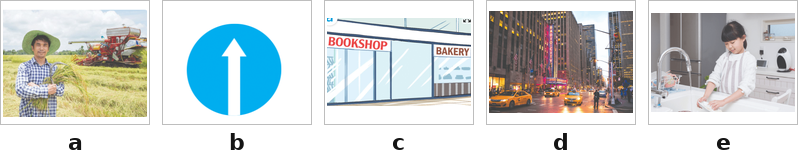
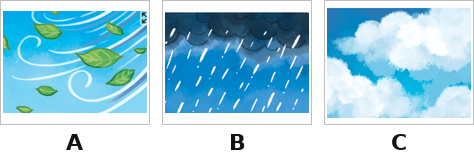
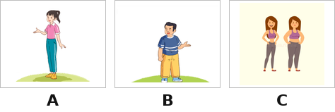
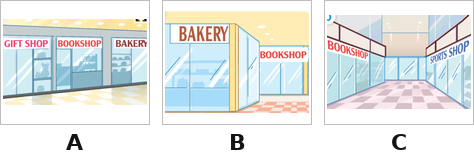
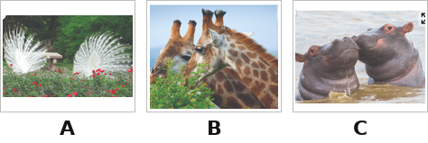
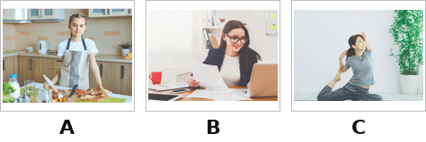
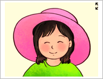

Thời gian: 35 phút. Còn 10 phút hệ thống nhắc; hết giờ có thêm 5 phút gia hạn rồi tự động nộp.
Bài làm ở chế độ toàn màn hình. Chuyển tab, mất focus, thoát toàn màn hình đều bị ghi nhận và báo cho giáo viên.
Không dùng chuột phải, sao chép/dán, phím tắt. Đáp án và giải thích chi tiết hiển thị sau khi nộp bài.
Đã nghe: 0/3 lần. Số lần nghe tối đa: 3.
Question 1. Listen and match (nghe và nối số với tranh). Ví dụ: 0 – d.

1
Nối (chọn đáp án đúng cho từng dòng):
Nghe câu số 1→
Nghe câu số 2→
Nghe câu số 3→
Nghe câu số 4→
Question 2. Listen and circle the correct answer (nghe và chọn đáp án đúng). Ví dụ: 0. A. It was cloudy.
2
Nghe câu số 1.
3
Nghe câu số 2.
4
Nghe câu số 3.
5
Nghe câu số 4.
Question 3. Listen and write the missing words (nghe và điền từ). Ví dụ: I watch TV in the afternoon.
6
A: How can I get to the cinema? B: .
7
A: What does he ? B: He’s big.
8
A: Where does he work? B: He works .
9
A: What are these animals? B: These are .
Question 4. Look, read and put a tick in the box (nhìn tranh, đọc và chọn tranh đúng). Ví dụ: What does it say? – It says “Turn right” → c.
10

What was the weather like last weekend? – It’s cloudy.
11

What does your sister look like? – She is tall.
12

Where’s the bookshop? – It’s behind the bakery.
13

Why do you like peacocks? – Because they dance beautifully.
14

What does she do on Sundays? – She does yoga.
Question 5. Read and complete using words in the box (chọn từ trong khung). Ví dụ: (0) sunny.
Today is Sunday. It’s (0) sunny. My mum and I are going to the (1) ______. It is (2) ______ the swimming pool. My mum (3) ______ to buy some food. I go there to buy some books about wildlife, especially the birds because they sing (4) ______. The books are eighty-eight (5) ______ dong. I’m happy to have new books.
Từ/cụm từ cho sẵn:oppositethousandmerrilywantsshopping centresunny
15
Chỗ trống (1):
16
Chỗ trống (2):
17
Chỗ trống (3):
18
Chỗ trống (4):
19
Chỗ trống (5):
Question 6. Order the letters (sắp xếp chữ cái thành từ, nhìn tranh). Ví dụ: s h t o r → short.
20
b a r y k e →
21
f m e a r r →
22
u r t n e f t l →
23
c l e r o d I o c s →
24

r n d o u →
Question 7. Rearrange the words to make complete sentences (sắp xếp từ thành câu đúng). Ví dụ: She goes to the shopping centre on Saturdays.
25
Sắp xếp thành câu đúng:
26
Sắp xếp thành câu đúng:
27
Sắp xếp thành câu đúng:
28
Sắp xếp thành câu đúng:
29
Sắp xếp thành câu đúng:
--:--
Bắt đầu làm bài kiểm tra
Nhập thông tin để hệ thống ghi nhận kết quả.
Nhắc giờ
⏰ Đã hết giờ làm bài
Bạn có thêm 5 phút để hoàn tất. Hết 5 phút bài sẽ tự động nộp.
⚠ Bạn đã thoát toàn màn hình
Hành vi này đã được ghi nhận. Hãy quay lại chế độ toàn màn hình để tiếp tục làm bài.